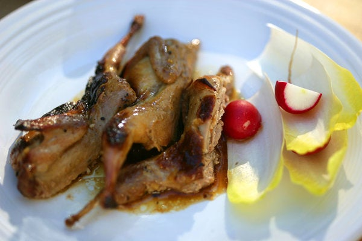

Quail Roasted with Honey, Cumin and Orange Juice

A perfect way to impress people with quail with simple recipe, try making it with a winter style side dish
Ingredients
- 8 quail, patted dry and left whole
- Salt and pepper to taste
- 2 tablespoons extra virgin olive oil>
- 30ml Sun-dried tomato pesto
- 2 tablespoons freshly squeezed orange juice
- 2 tablespoons honey
- 1 teaspoon minced garlic
- 1 tablespoon ground cumin
Steps
- Preheat oven to 500 degrees. Rub the quail with half the olive oil, then sprinkle all over with salt and pepper. Put them breast side up in a roasting pan just large enough to accommodate them. Combine remaining ingredients and brush about half of this mixture over the birds; put in oven.
- After about 10 minutes of roasting, baste with remaining mixture, then continue to roast until done, about 10 minutes more. Serve birds hot, with pan juices, or warm or at room temperature.Bon appetit!